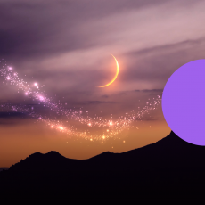
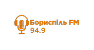
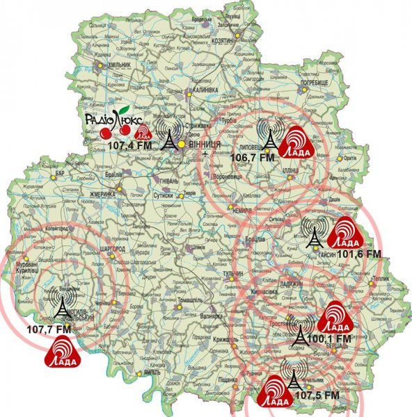

🎵 Радіо УКРАЇНИ 🇺🇦
Онлайн трансляція українських радіостанцій (RadioJS + Radio-Bash)

Armiya FM

Hit FM

Kiss FM

DJ FM

NRJ Ukraine

Melodia FM

Classic Radio

Kraina FM

Hromadske Radio

УР: Казки

FM Galychyna
Best FM

Informator FM
Boguslav FM

Brody FM

Buske Radio

Буковинська хвиля

Lviv Duzhe Radio

Dnipro Europa Plus

Fresh FM

Голос Прикарпаття

Golos Stryia

Гуцульська столиця

Zhytomyr 106.1 FM

Kremenchuk Автохвиля

ZFM

Lutsk Аверс FM

Bila Tserkva Blits FM

Korosten New Day FM

Berehove Pulzus FM

Chernivtsi Radio 10

Myrgorod FM

Radio Radekhiv

Radio Sfera FM

Vinnytsya Radio Takt

Berdychiv Rekord FM
Офлайн
Akkerman FM
Офлайн

Borispol FM
Офлайн

Ladyzhyn Lada FM